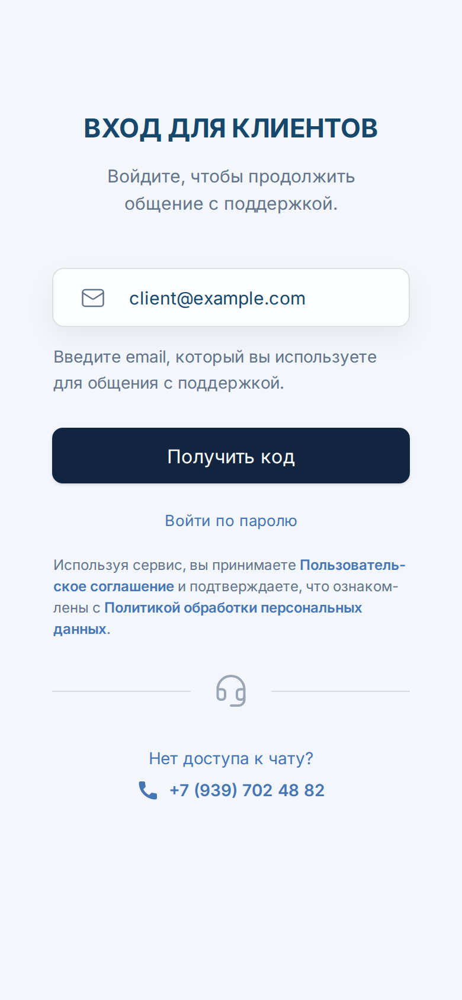
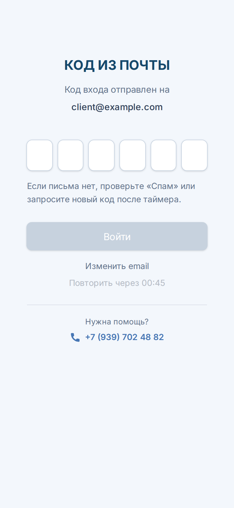
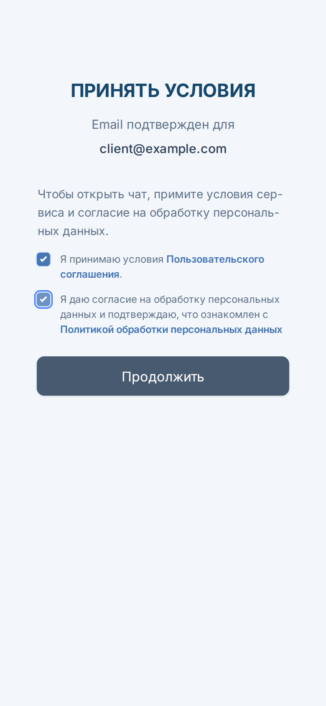
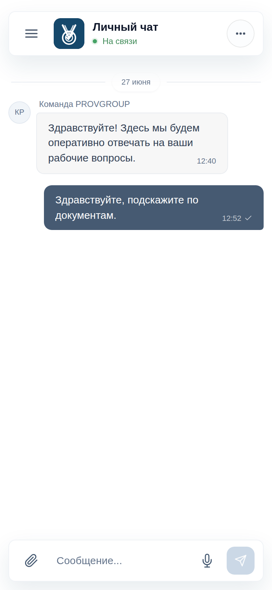
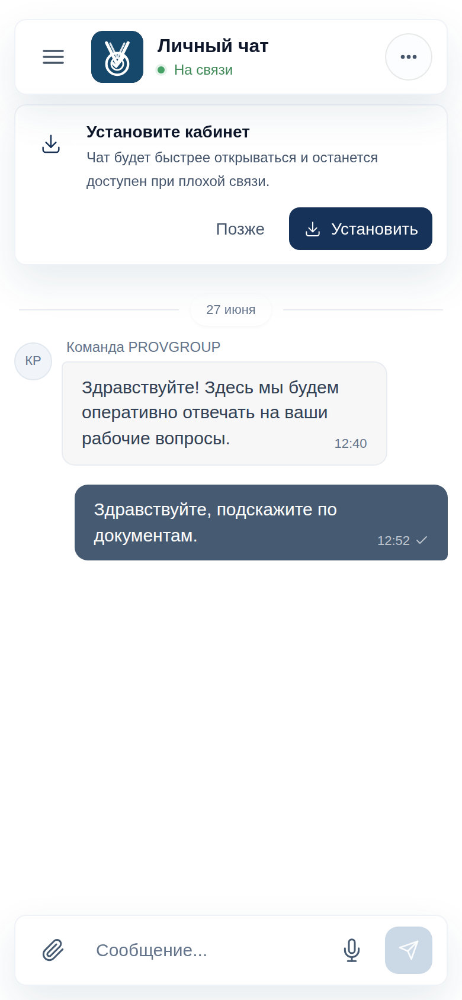
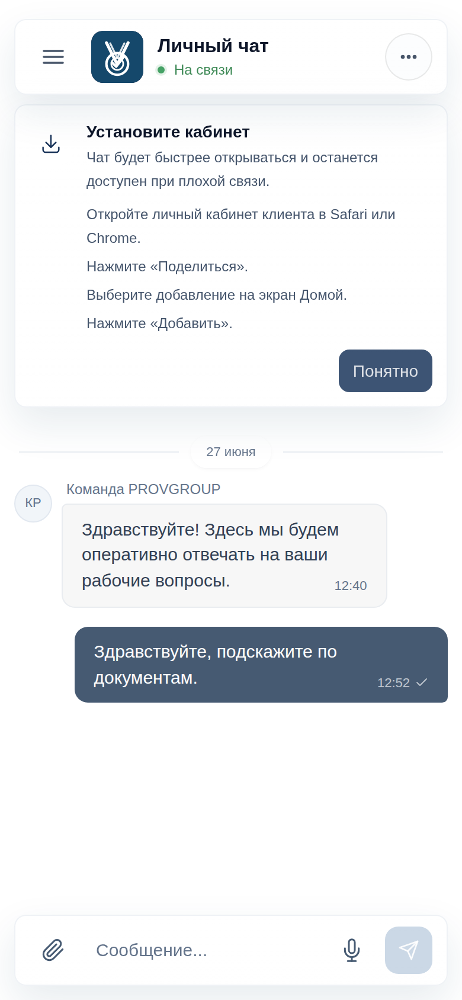
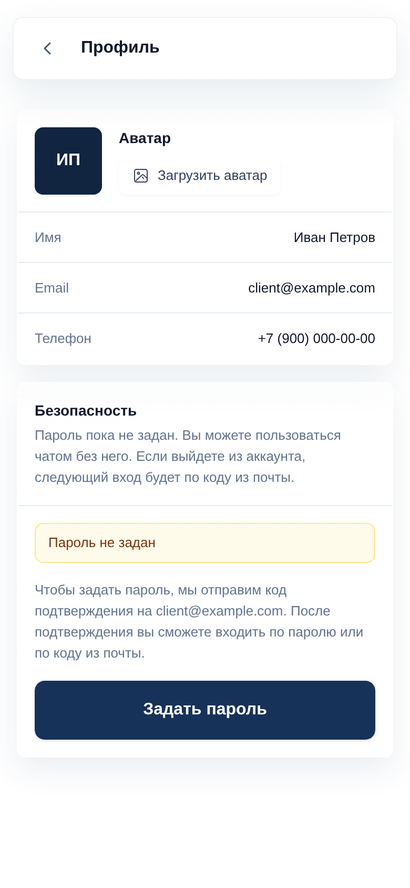
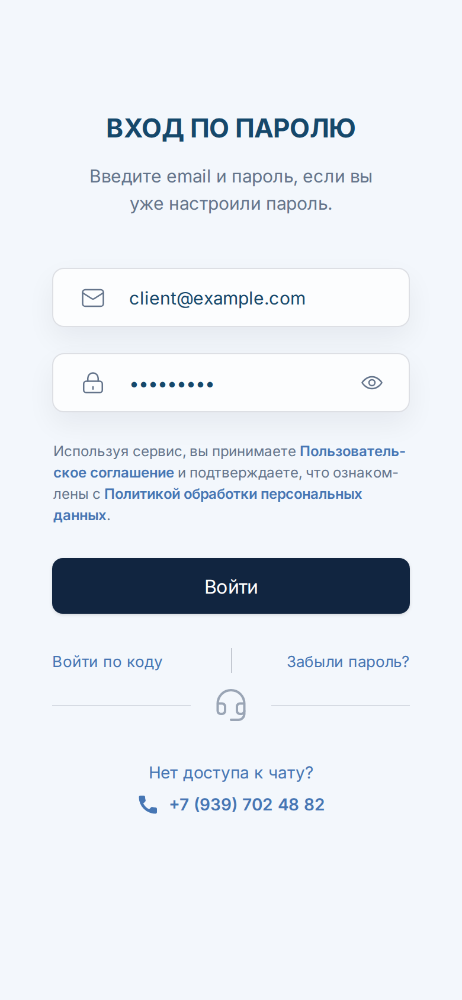

Доступ открывается только для известных клиентов. Перед первым входом ваш контакт должен быть заведен в админке поддержки.
В контакте должны быть указаны email и телефон, которые вы используете для общения с поддержкой.
Откройте браузер на телефоне и введите адрес lk.provgroup.ru.

Основной вход работает по email-коду. Введите email, который используется для общения с поддержкой, и нажмите Получить код.
Если пароль уже был настроен, можно перейти к входу по паролю отдельной ссылкой.
Откройте письмо от сервиса, найдите одноразовый код и введите его на экране подтверждения.
Код действует ограниченное время. Если время вышло, запросите новый код.

При первом доступе нужно принять пользовательское соглашение и согласие на обработку персональных данных.
Без этих отметок личный кабинет клиента не откроет чат.

В чате отображается переписка с поддержкой. Напишите сообщение в нижнее поле и отправьте его кнопкой справа.
Меню в правом верхнем углу открывает профиль, настройки и выход. Если вас добавили в групповые чаты, выберите нужную группу через меню слева.
После входа по коду можно пользоваться чатом без пароля. Если вы выйдете из аккаунта или очистите cookies, следующий вход снова будет по коду из почты. Пароль можно задать позже в профиле.

На Android личный кабинет клиента показывает блок установки, когда браузер готов установить приложение.
Нажмите Установить. После этого Chrome покажет системное подтверждение установки.
Если вы нажали Позже, установку можно запустить через меню Chrome: нажмите кнопку с тремя точками в правом верхнем углу браузера, найдите пункт Установить приложение или Добавить на главный экран и подтвердите установку.

Если блок установки не появился сразу, откройте чат при наличии интернета и подождите несколько секунд. Chrome сам решает, когда показать предложение установки.
На iPhone установка выполняется вручную через меню браузера, поэтому личный кабинет клиента показывает короткую инструкцию прямо внутри чата.
Нажмите Установить, прочитайте шаги и выполните их в Safari или Chrome.

В Chrome название пункта может отличаться, например «Добавить на главный экран». Системное меню браузера открывается поверх страницы, поэтому на скриншоте показана подсказка внутри кабинета.
Откройте профиль из меню чата. Здесь видны имя, email, телефон и состояние пароля.
Если пароль не задан, нажмите Задать пароль. Личный кабинет клиента отправит код на ваш email, чтобы подтвердить владельца аккаунта.

Если вы вышли из аккаунта, очистили cookies или открываете личный кабинет клиента на новом устройстве, просто войдите снова по коду из почты.
Это штатный сценарий для пользователей, которые не задавали пароль.
Если пароль уже настроен, можно войти быстрее через экран Вход по паролю.
Если пароль забыт, используйте восстановление по коду из почты на этом же экране.

Если письмо с кодом не пришло, проверьте папку «Спам», правильность email и наличие интернета.
Если личный кабинет клиента пишет, что доступа нет, обратитесь в поддержку: скорее всего, email или телефон еще не добавлены в контакт.
Если email или телефон не найден, обратитесь к поддержке. Контакт должен быть заранее добавлен в админке.